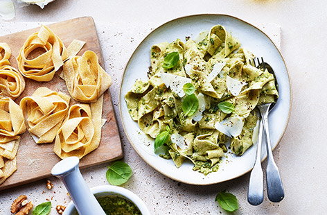

Home
Fresh Pasta

Fresh Pasta
Fancy making your own pasta? No machine required. You can use plain flour to make the pasta, but 00 flour gives it a little more bite. This pasta is called pappardelle, the thick, silky ribbons pair really well with everything - from hearty sauces to a simple pesto.
Ingredients
- 350g 00 flour
- 3 medium eggs, plus 3 egg yolks
- 2 tbsp olive oil
- semolina, for dusting
- 1 tbsp salt
Steps
- Mixing eggs and flour
- Kneading the dough
- Dividing the dough
- Rolling out the pasta
- Slicing the sheets
- Cooking the pasta